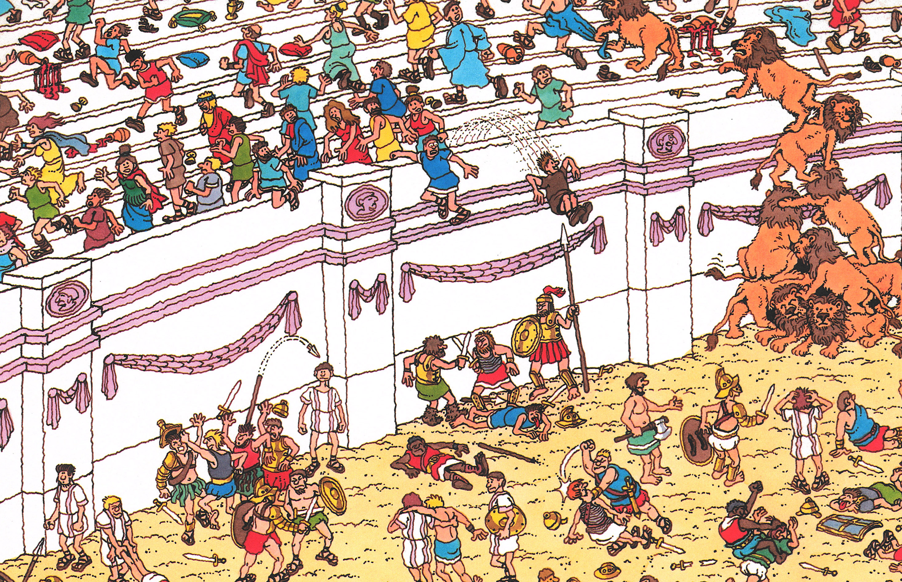

Find Waldo Now: Scene 03 - Fun and Games in Ancient Rome
Originally, only Waldo and his lost book were hidden in the scene.
Waldo was redrawn with the new character design, and an extra character was added to obscure him:
When the Wizard was added, so were other characters to obscure him:
When Odlaw was added, so were additional details to obscure him:
This assassination scene was repositioned ever so slightly, likely to prevent it from being cut off at the page boundary:
The guy giving a thumbs-up at the edge of the page was also repositioned slightly:
The Romans spent most of their time fighting, conquering, learning Latin and making roads. They always had games at the Coliseum. Their favorite games were fighting, chariot racing, fighting, and feeding Christians to the lions. When the crowd gave a gladiator the thumbs down, it meant kill your opponent. Thumbs up meant let him go. Thumbs up for you if you can find me at the games.
The Romans spent most of their time fighting, conquering, learning Latin and making roads. When they took their holidays, they also had games at the Coliseum (an old sort of playground). Their favorite games were fighting, more fighting, chariot racing, fighting, and feeding Christians to lions. When the crowd gave a gladiator the thumbs-down, it meant he should kill his opponent. A thumbs-up meant he should let him go—to fight to the death another day.
By the early 90s additional artwork had been added underneath the book, so the scene could be used outside the context of the book (posters, puzzles, etc.):
Starting the in the 1994 edition, you can see some of the new artwork peeking around the sides of the book, particularly above in the bleachers: